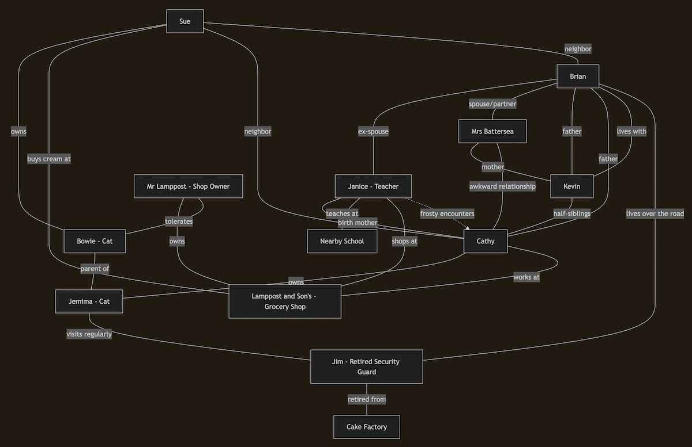

Poorly Structured Notes on AI Part 5 - Neighbourhood Diagram
I mostly use current AI tools for coding tasks, so to talk about real examples would involve getting lost in the weeds of a technical subject, creating a distraction from the actual point.
So I came up with a rambling paragraph in plain English describing some people. It’s deliberately a little ambiguous but it gives several disconnected clues as to how everyone knows each other:
Brian’s son Kevin lives with him in London. Kevin has a half-sister Cathy whose cat Jemima spends about half his time over the road in the home of Jim, an old man who recently retired from his job as a security guard at a nearby cake factory. Mrs Battersea is close to her son but has a somewhat awkard relationsip with Cathy who misses her birth mother. Jemima came as a kitten from next door’s cat, who got his name from his owner’s favourite singer. Bowie likes nothing more than a dish of cream, which Sue buys especially for him from the small grocery shop at the end of the road. Cathy earns a bit of extra on the weekend working in that shop. The owner Mr Lamppost actually dislikes cats generally but has a soft spot for cream-loving cats so he makes an exception. Brian’s ex-wife Janice teaches at the nearby school, and gets her stationary from Lamppost and Son’s. There is sometimes a frosty encounter at the checkout between these close-knit neighbours.
You don’t have time to read all that! So can AI understand it for you? Yes, I misspelled “awkward” and “stationery”, but whatever. What does Claude’s default model (Sonnet 4.5) make of this, if I just say it out of the blue?
Claude:
This is an interesting narrative puzzle about a neighborhood and its interconnected residents! I can see various relationships between:
- Brian (lives in London with son Kevin)
- Kevin (Brian’s son, half-brother to Cathy)
- Cathy (Kevin’s half-sister, works at the grocery shop, owns cat Jemima)
- Janice (Brian’s ex-wife, teacher, presumably mother to one of the children)
- Mrs Battersea (close to her son, awkward relationship with Cathy - likely a stepmother figure)
- Jim (retired security guard who Jemima visits)
- Sue (buys cream for Bowie, likely Bowie’s owner)
- Bowie (next-door cat, Jemima’s parent, named after a singer)
- Mr Lamppost (owns “Lamppost and Son’s” grocery shop)
I notice a few interesting details like Jemima being referred to with male pronouns despite traditionally being a female name, and the complex family dynamics with half-siblings and an ex-wife situation.
How can I help you with this? Would you like me to:
- Create a visual relationship map?
- Identify any logical inconsistencies?
- Answer specific questions about the relationships?
- Help organize this into a different format?
- Something else?
This very much the standard experience. First, it has given a really impressive overall demonstration of reading comprehension. It hasn’t inferred much for itself, but it can restate the given information in its own words. The meaning of the relationships appears to have been captured.
But it has something mixed up to do with Jemima the cat and “his” pronouns (I’m not here to produce rage-bait, I can assure you.) Let’s see if we can get it to “think harder”.
Look more closely at the detail about the cats - I think you’ve misinterpreted. Can you see how?
Claude:
Ah, let me re-read this more carefully!
“Jemima came as a kitten from next door’s cat, who got his name from his owner’s favourite singer. Bowie likes nothing more than a dish of cream…”
I think I see it now - the “who got his name from his owner’s favourite singer” refers to Jemima, not the next-door cat! So:
- Jemima is the cat named after Cathy’s favourite singer (David Bowie, presumably)
- Bowie in the next sentence is likely just referring to Jemima by his nickname/the singer-inspired name
- So there’s only one cat being discussed - Jemima/Bowie - Cathy’s cat who came from next door’s cat (the parent)
Is that right? So Sue buying cream for “Bowie” is actually buying cream for Jemima (Cathy’s cat), not for the parent cat next door?
No, that’s worse. Only one cat?! Claude, what are you smoking! I ask this on a regular basis. And yet I continue to use Claude on a regular basis anyway - keep reading…
Let’s give a stronger hint, still without actually giving the answer:
Consider again how many cats are being discussed. Look for clues.
Claude:
Ah! Let me parse this more carefully:
“Jemima came as a kitten from next door’s cat, who got his name from his owner’s favourite singer.”
The “who” refers to next door’s cat (Jemima’s parent) - so the next-door cat is the one named after a favourite singer!
Then: “Bowie likes nothing more than a dish of cream, which Sue buys…”
So there are TWO cats:
- Jemima - Cathy’s cat (who spends time at Jim’s house)
- Bowie - the next-door cat who is Jemima’s parent, named after Sue’s favourite singer (David Bowie), and Sue buys cream for him
Sue must be the next-door neighbor who owns Bowie!
Is that correct?
Bingo. So Claude was able to understand “Jemima came as a kitten from next door’s cat, who got his name from his owner’s favourite singer,” but it was necessary to ask it several times and give a hint to force it to reverse out of an error.
By making those complaints, I’m acting like the traditional tools that check code: compilers, and also unit tests. These can be executed to get output that contains clues - occasionally even helpful clues! - as to what mistakes you might have made in your code. In a real coding activity, Claude does a great job of running these tools on its own initiative, interpreting the output and responding to it by making corrections.
Now we have everything reasonably straight, can Claude draw a picture of this information?
That’s it! Okay, please generate a mermaid graph diagram from the narrative. Include as many inferred family relationships and other interconnections as you can.

If we drew our own “mental picture” it would probably look something like that. People often have a “Dude…!” moment from seeing this. Comprehension from language is one aspect of mental acuity, but being able to visualise things that have been described from you is suggestive of something more a bit more human-like.
At least, that’s the conclusion you might jump to at first. But a diagram in mermaid format is written as yet another stream of text. This is what Claude actually generated:
graph TD
%% People
Brian[Brian]
Kevin[Kevin]
Cathy[Cathy]
Janice[Janice - Teacher]
MrsB[Mrs Battersea]
Jim[Jim - Retired Security Guard]
Sue[Sue]
MrL[Mr Lamppost - Shop Owner]
%% Cats
Jemima[Jemima - Cat]
Bowie[Bowie - Cat]
%% Places
Shop[Lamppost and Son's - Grocery Shop]
School[Nearby School]
Factory[Cake Factory]
%% Family relationships
Brian ---|ex-spouse| Janice
Brian ---|spouse/partner| MrsB
Brian ---|father| Kevin
Brian ---|father| Cathy
Janice ---|birth mother| Cathy
MrsB ---|mother| Kevin
Kevin ---|half-siblings| Cathy
MrsB ---|awkward relationship| Cathy
%% Living arrangements
Brian ---|lives with| Kevin
%% Cat ownership and relationships
Cathy ---|owns| Jemima
Sue ---|owns| Bowie
Bowie ---|parent of| Jemima
Jemima ---|visits regularly| Jim
%% Work relationships
Cathy ---|works at| Shop
MrL ---|owns| Shop
Janice ---|teaches at| School
Jim ---|retired from| Factory
%% Shopping/commerce
Janice ---|shops at| Shop
Sue ---|buys cream at| Shop
MrL ---|tolerates| Bowie
%% Neighborhood
Sue ---|neighbor| Cathy
Sue ---|neighbor| Brian
Jim ---|lives over the road| Brian
%% Awkward encounters
Janice -.frosty encounters.-> Cathy
So really what Claude has done is rewrite the same relationships in a precise, formal language. The thing is, to be good at doing that, it has to “get” the relationships, but we have no idea to what extent the way it does that resembles or differs from how we do it. Current AI is eerily good at this, and then will suddenly get something elementary quite wrong, like the cat thing.
Another example, when it generated the diagram it couldn’t resist adding a little bragging note about the key relationships it had identified:
Claude:
- Mrs Battersea is Brian’s current partner and Kevin’s mother
- Janice is Cathy’s birth mother and Brian’s ex-wife
- Sue is the next-door neighbor who owns Bowie
- The “frosty encounters at the checkout” are between Janice and Cathy (stepmother/stepdaughter tension)
- Everyone lives in close proximity in this London neighborhood
Oh dear. What is the relationship between Janice and Cathy? I never directly stated it. I said Janice is Brian’s ex-wife and Brian’s son has a half-sister Cathy. A reasonable conclusion is that Janice is Cathy’s birth mother, and Claude did in fact infer this and included it on the diagram:
Janice ---|birth mother| Cathy
But then it had to go and spoil it by suggesting there is “stepmother/stepdaughter tension” between Janice and Cathy. So I have to challenge this:
In your list of key inferred relationships can you see any contradictions?
Claude:
Yes! I see the contradiction:
I said “Janice is Cathy’s birth mother” but then also said “frosty encounters… (stepmother/stepdaughter tension)”.
Those are incompatible - if Janice is Cathy’s birth mother, they can’t have stepmother/stepdaughter tension!
Let me reconsider the relationships:
From the narrative:
- Cathy “misses her birth mother” (suggesting birth mother is absent/deceased)
- Mrs Battersea has an awkward relationship with Cathy
- Janice is Brian’s ex-wife
So the correct interpretation is probably:
- Janice is Kevin’s birth mother (and Brian’s ex-wife)
- Cathy’s birth mother is someone else who is absent (explaining why Cathy misses her)
- Mrs Battersea is Brian’s current partner and Cathy’s stepmother (explaining the awkward relationship)
- Mrs Battersea is “close to her son” - but wait, that would make Kevin her son too…
Hmm, or maybe Mrs Battersea is both Kevin AND Cathy’s mother, and the “birth mother” Cathy misses is someone else entirely, making Cathy have a different family structure?
I’m getting tangled up. What’s the correct interpretation?
Again, note how - if encouraged to do so - Claude can identify mistakes in its own output. Also see how it can get into even more of a muddle, contradicting simple and correct facts it has previously stated multiple times. It can even seemingly become aware of this and begin doubting itself in mid-explanation. Can I put it back on track?
You already got the relationships correct in your diagram. Why do you think there is tension between Janice and Cathy specifically?
Claude:
Ah! You’re right - I need to think about this differently.
If Janice IS Cathy’s birth mother (as I have in my diagram), and Cathy “misses her birth mother,” it doesn’t mean Janice is absent - it means they have a distant or estranged relationship despite living nearby.
So the “frosty encounters at the checkout” between Janice and Cathy make sense because they are:
- Mother and daughter who are estranged
- They live in the same neighborhood
- Janice shops at the store where Cathy works
- They encounter each other but the relationship is cold/difficult
This explains why:
- Cathy emotionally “misses” having a proper relationship with her birth mother
- The encounters are specifically described as “frosty”
- They’re described as “close-knit neighbours” physically but emotionally distant
So the tension is mother-daughter estrangement, not stepmother-stepdaughter conflict as I mistakenly said in my analysis. The diagram was actually correct!
There’s a ton of quite subtle inference going on there, based on a broad knowledge of how humans relate to one another. For a “coding assistant”, Claude seems to have watched a lot of soap operas. And to re-emphasise, I never directly said Cathy and Janice have a frosty relationship. I said:
- “Cathy earns a bit of extra on the weekend working in that shop.” Which shop? It’s implied by the previous sentence, although mixed in with the stuff about Sue buying cream for her cat.
- “Janice… gets her stationary from Lamppost and Son’s.” Did I explicitly say that’s a shop? No! But the name sort of sounds like one (general knowledge.) Also I previously said a Mr Lamppost was “the owner” of something, but what? Again, I didn’t say, but it was right after I talked about the shop where Cathy works.
- “There is sometimes a frosty encounter at the checkout…” implying it happens in a shop, and we’ve been talking about a single shop where Cathy works and Janice buys stationery.
Claude certainly pieced together a whole lot of disjointed clues, embedded in some other distracting information, which it didn’t ignore but correctly separated out.
But it also demonstrated an ability to trip up over things that even a person of below average intelligence wouldn’t have a problem with. It’s this peculiar mixture that throws us off. It sends some people straight to the conclusion that AI in its current form is nothing but a parlour trick, smoke and mirrors, shallow somehow. We’re being fooled! It’s not actually smart, it’s just pretending to be smart, in a really detailed and impressive way.
LLMs like the ones we have now, although they don’t reproduce all the capabilities of brains, are clearly well positioned to serve as the “language organ” of a broader intelligent system. Having such a language organ, with a demonstrable ability to discern the precise meaning of complex sentences, is the doorway to analytical intelligence. As a result, LLMs, even just the present ones, already represent an astonishing degree of generality over a wide enough domain that (a) we cannot ignore them or pretend they don’t exist, and (b) anyone with a genuine interest in intelligence ought to be fizzing with excitement at their existence.
Instead, many people rush to accumulate a little list of defensive objections against the idea that LLMs are worth taking seriously. The first magic word they learn is “hallucinations”. That LLMs are sometimes unreliable is supposed to be a sign that they represent only a meaningless cul-de-sac in the search for true AI.
At the same time they contend that the shallowness of LLMs, artlessly reproducing information from their training data, rules out any possibility of true creativity.
But I’d argue that there is a deep connection between unreliability and creativity. A formally defined algorithm with no bugs in it will carry out the solution to some specified problem with absolute reliability. It cannot solve anything else. That is not considered a weakness; it’s the whole point of a formally defined algorithm. If you feed it anything other than the kind of problem it can solve, you have messed up. It never makes a mistake, by definition.
The kind of intelligence we have is not like that. It’s sloppy, messy, happened-upon, arrived at by trial and error, heavily redundant, undesigned. We can be distracted in the middle of a train of thought by our stomach rumbling. We can become bored, or amused to the point of laughter, by repetition. But again, this is a feature, not a bug. Sometimes, to get something “wrong” according to the formalism of one system is to make a useful discovery in the context of another system not yet formalised. To invent something new is, from the perspective of formally defined algorithms, an error. They are two different ways of interpreting the same event: if you paid a terrible price it must have been a mistake, but if you hit the jackpot, you’ve made an ingenious discovery. (As an adolescent I thought of this example: acne could function as camouflage against the right wallpaper.)
It follows that any system (such as a brain) that appears to be capable of solving a wide range of problems, as well as discovering new problems to be solved, etc. must be structured as to be fundamentally unreliable from some perspectives at the same time as it is impressive from others. At some layer of its construction, there must be a tangled, incomprehensible mess, from which emerges behaviours that can be interpreted as either impressive or hopeless, depending on the surrounding context. Below that messy layer, things may look much more simple and deterministic, because the building blocks (neurons, synapses etc.) can be very simple. It’s the way they’re connected that allows for a disgusting, non-designable mess that has the ability to be inventively wrong.
Thus in today’s LLMs, they are constructed from thoroughly deterministic building blocks, but they churn information through pathways so bewilderingly, staggeringly interconnected that the whole system defies any attempt at direct comprehension. Like us, they make guesses, with only a fair probability of being right. At the level that matters to us (the ideas expressed in the text it produces) an LLM is not a formally defined algorithm at all. It is a mess that seems to work some of the time, and this is a feature, not a bug.
Now, given the oopsies we’ve seen in this walkthrough, you might think I’m straying too far into speculation. I had to step in a little. But the majority of my interventions were mere encouragement to try again, rather than actual new information!
AI in its current form already represents a kind of intelligent resource. It isn’t exactly like us. It has a different way of understanding, one that we can harness and use to amplify our own efforts, just as we do when we use any other tool.
Postscript: when I first played with ChatGPT (as we all did when it first appeared), one question I asked it was:
“In the alphabet the next letter after the first letter of the name of the month before May is a homonym for which insect?”
The result was a grisly mess. When I tortuously broke the problem down into elementary steps, it eventually said: “B isn’t a homonym for Bee, because a homonym is a word that sounds the same but has a different meaning, and B doesn’t have the same meaning as Bee.”
But I just asked today’s Claude, and in a few seconds it said:
The month before May is April, which starts with “A”. The next letter in the alphabet after A is “B”.
“B” is a homonym for bee - the flying insect that makes honey and pollinates flowers.
That reminder of what a bee is - should I feel condescended towards?
Is this how it begins?
Not yet regretting the time you've spent here?
Keep reading: